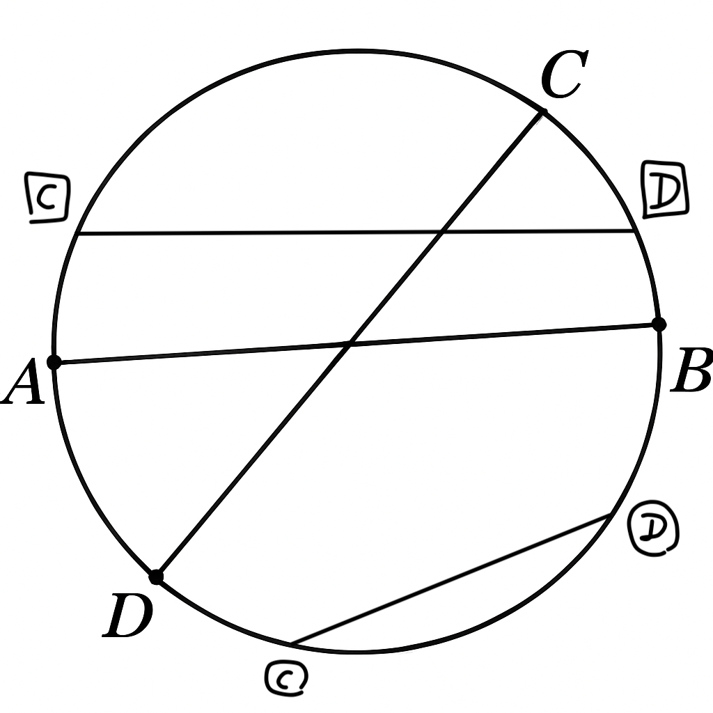

This is a math question I got on a test before.
I still remember it because the solution is pretty
cool.
A circle is drawn on a page. A straight line is drawn
through the center of the circle, forming a diameter
with endpoints A and B. Second straight line is then
drawn at a random angle and position so that every
point in the circle is equally likely to lie on this
line. The second line intersects the circle at points
C and D.
What is the probability that the two lines intersect
inside the circle?
An example - fix the first line A,B arbitrarily. Then assume the second line is placed at random. The image shows different possible configurations of which only the line that intersects with the first is the one marked with the normal C and D endpoints. 
The answer should be in fraction form.
For example, if you believe the answer is 15% then
that is 3/20